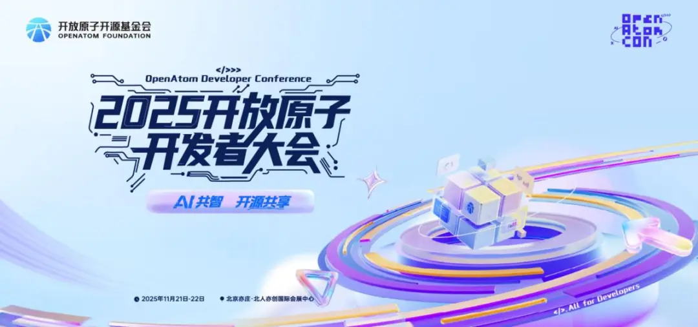
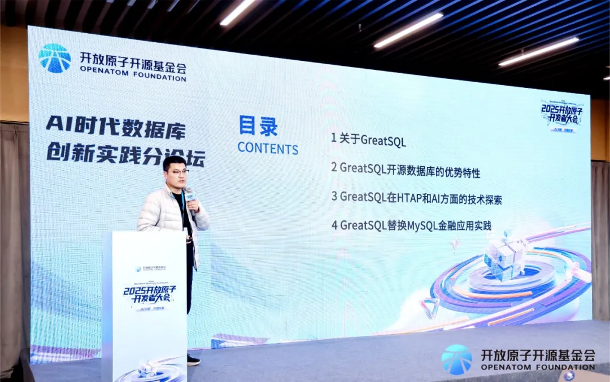
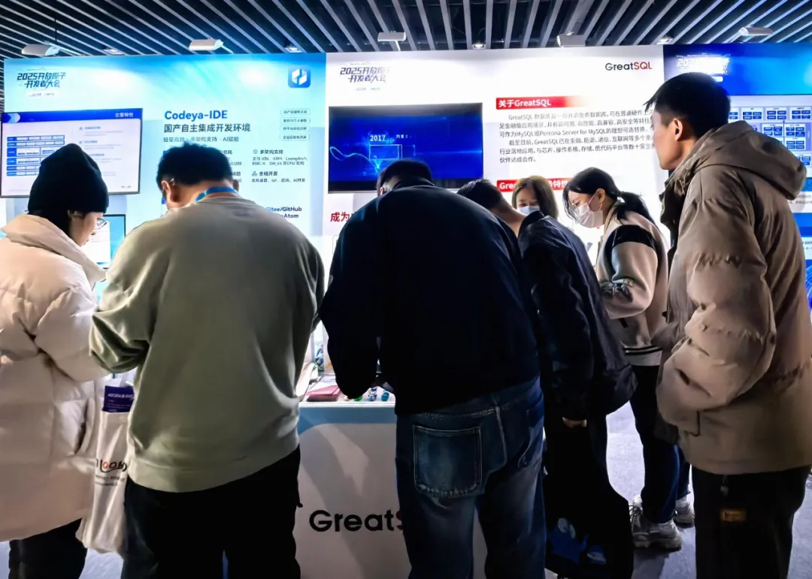
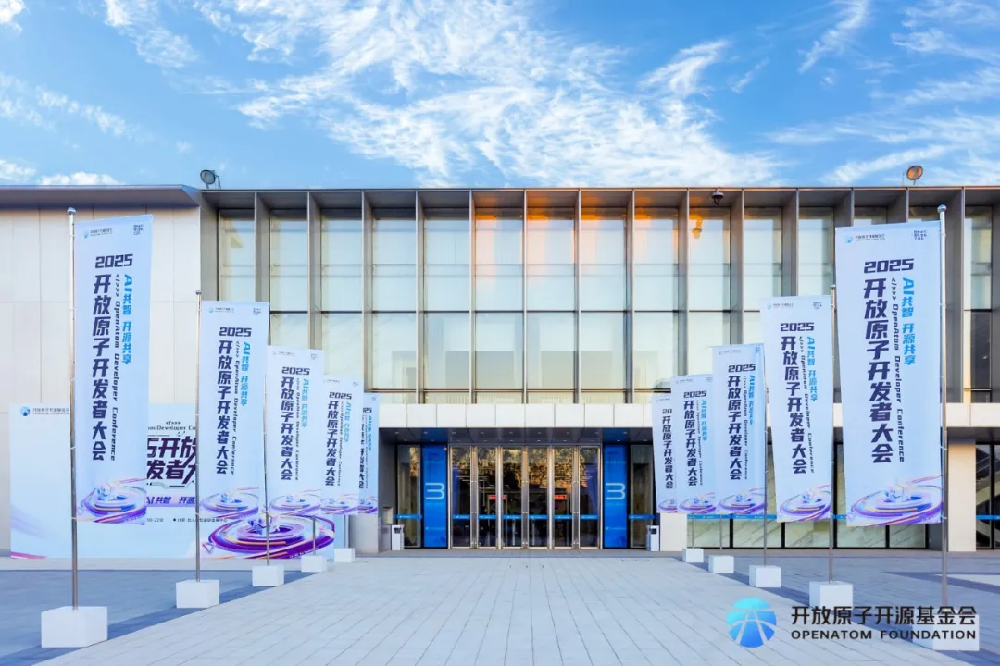

展会 | GreatSQL亮相2025开放原子开发者大会 HTAP与AI创新实践受瞩目
11月21-22日，以“一切为了开发者——AI共智，开源共享”为主题的2025开放原子开发者大会在北京亦庄成功举办。本次大会由开放原子开源基金会主办，汇聚全球顶尖开发者、企业技术领袖与社区核心贡献者，设置了15场技术分论坛、120余场精彩演讲。
作为连续三年参展的开源社区，GreatSQL在本次大会上备受关注。GreatSQL社区不仅设置了交流展台，更在“AI时代数据库创新实践分论坛”上发表了重要技术分享，全面展示了其面向金融级的开源数据库HTAP与AI创新实践。

01 技术实践 从金融级数据库到HTAP与AI融合
在大会的技术分享环节，GreatSQL社区产品总监赵向前发表了题为“GreatSQL：面向金融级的开源数据库HTAP与AI创新实践”的主题演讲，分享了社区最新技术成果。
赵向前首先介绍了GreatSQL 8.4.4-4版本的重要更新。该版本在高可用、高性能、高兼容、高安全四个维度实现显著提升。其中，通过Rapid引擎、Turbo引擎及InnoDB优化，实现了TPC-C性能提升30%，TPC-H性能提升200多倍的突破性进展。
在HTAP与AI技术探索方面，赵向前详细阐述了GreatSQL的创新实践。“通过Rapid引擎，我们实现了TB级OLAP能力；通过Turbo引擎，实现了对InnoDB引擎数据的实时AP需求；利用Rapid和Turbo引擎并结合主从复制和组复制方案，构建了完整的HTAP架构。在GreatSQL 8.4.4-4的TPC-H测试中，性能相对GreatSQL 8.0进一步提升超过40%。”
特别引人关注的是，GreatSQL在AI方面的探索。社区打造的智能数据库操作中间件GreatSQL MCP Server，基于Model Context Protocol开发，成为连接大型语言模型与数据库的桥梁，具备自然语言、零代码等特性，极大降低了数据库管理门槛。
针对MySQL5.7已停服2年以及MySQL8.0明年即将停服的现状，赵向前还分享了GreatSQL在梅州客商银行等金融客户中的成功实践，为现场开发者提供了切实可行的数据库迁移方案。

02 深度交流 展台互动彰显技术实力
在大会的开源交流区，GreatSQL展台迎来了众多数据库爱好者、技术开发者及企业技术负责人的到访。社区团队展示了GreatSQL 8.4.4-4的最新技术成果，并与来访者进行了深入的技术交流。
“针对多位开发者咨询的MySQL 8.0 即将停服的解决方案，我们的团队都给予了专业且及时的解答。”GreatSQL社区成员表示，“现场交流气氛非常热烈，很多开发者对我们的HTAP能力和AI集成特性表现出浓厚兴趣。”
展台互动不仅展示了GreatSQL的技术实力，更体现了开源社区共享共建的精神。开发者们就实际应用中遇到的性能优化、高可用部署等问题与社区团队展开讨论，获得了切实可行的建议。

展望未来：持续共建开源生态
通过本次参展，GreatSQL进一步巩固了在开源数据库领域的技术影响力。连续三年参与开放原子开发者大会，体现了社区对开源理念的坚定承诺与长期实践。
GreatSQL社区未来将持续深耕开源数据库技术，不断完善产品特性，为开发者提供更优质的数据库解决方案。同时，GreatSQL也将积极参与开源生态建设，与各方力量携手推动中国开源事业蓬勃发展。
在AI技术快速发展的时代背景下，GreatSQL将持续探索数据库与人工智能的深度融合，为金融级应用场景提供更强大、更智能的技术支撑，助力全球开发者创造更大价值。
